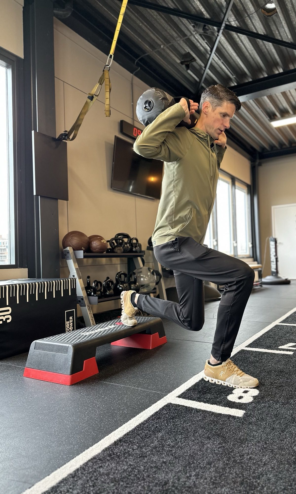
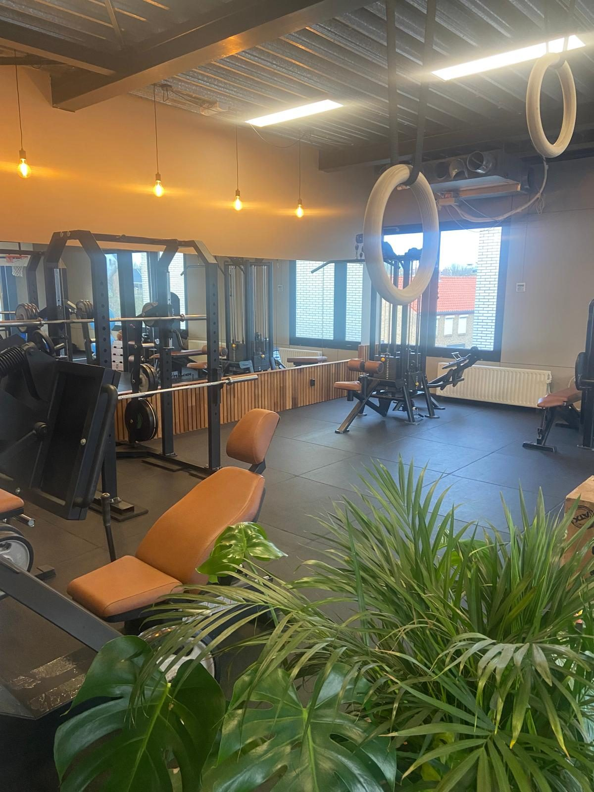

Sportfysiotherapie op maat
Door onze jarenlange ervaring zijn we gespecialiseerd in de behandeling van complexe orthopedische blessures. Elke behandeling stellen we persoonlijk voor je samen.
Meer over sportfysiotherapie op maatweCare Sportfysio is jouw praktijk voor sportblessures, sportrevalidatie en orthopedische klachten. Je bent hier welkom als topsporter, als fanatieke recreant of als iemand die gewoon weer pijnvrij wil bewegen. We kijken verder dan de klacht alleen en zoeken samen met jou naar de oorzaak.

Ma t/m vr vanaf 08:00 uur
weCare Sportfysio is de voortzetting van de sportfysiotherapie die ik jarenlang mede heb opgebouwd als oprichter van Move2Perform. Na een splitsing ga ik verder onder een eigen naam, op de vertrouwde locatie aan de Bloemenweg in Maastricht. De ervaring, de werkwijze en de passie voor sport blijven hetzelfde. Daarnaast is er nu nog meer ruimte voor waar mijn hart ligt: de loop- en duursport.
Onze naam zegt waar we voor staan. Als team zorgen wij voor onze patiënten: met aandacht, met vakmanschap en met persoonlijke begeleiding van het eerste consult tot je weer volledig terug bent in je sport. Je bent bij ons geen nummer. Je bent een sporter met een eigen verhaal en een eigen doel.
We geloven dat herstel begint met bewegen, en dan op de juiste manier. Elke blessure laat iets zien over hoe jouw lichaam werkt. Die kennis gebruiken we om je niet alleen te laten herstellen, maar ook sterker en blessurebestendiger terug te laten komen.
Elke behandeling wordt persoonlijk voor jou samengesteld, afgestemd op je klacht, je sport en je doelen. Je hebt geen verwijzing nodig.
Door onze jarenlange ervaring zijn we gespecialiseerd in de behandeling van complexe orthopedische blessures. Elke behandeling stellen we persoonlijk voor je samen.
Meer over sportfysiotherapie op maatWe meten met een sensor hoe je loopt en hoe je lichaam de klappen opvangt. Zo voorkom je blessures en loop je efficiënter.
Meer over loopanalyseGerichte behandeling van gewrichten, vooral bij nek-, rug- en hoofdpijnklachten.
Meer over manuele therapieBen je hardloper, triatleet, wielrenner of een andere duursporter? Dan ben je bij ons op de juiste plek. In ons expertisecentrum combineren we blessurebehandeling met:
Zo helpen we je blessures te voorkomen en je prestaties te verbeteren, of je nu traint voor je eerste 10 kilometer, een marathon of een triatlon.
Van je eerste afspraak tot je terugkeer in je sport.
Bel, mail of vul het formulier in. Een verwijzing van de huisarts is niet nodig.
We bespreken je klacht en je sport en onderzoeken je. Daarna weet je wat er aan de hand is.
Samen spreken we doelen af en hoeveel behandelingen daar ongeveer voor nodig zijn.
We bouwen de belasting op en testen of je klaar bent om weer volledig te sporten.
Als team zorgen wij voor onze patiënten: met aandacht, met vakmanschap en met persoonlijke begeleiding van het eerste consult tot je weer volledig terug bent in je sport.

Je staat er bij ons niet alleen voor. Onder één dak werken we samen met onder andere osteopathie en sportmassage. Daarnaast hebben we korte lijnen met de beste specialisten, trainers en zorgprofessionals in de regio. Zo krijg je altijd de zorg die het beste bij jou past.
weCare Sportfysio
Bloemenweg 65
6221 TT Maastricht
[Meestal kun je binnen een paar werkdagen terecht voor een eerste afspraak.]